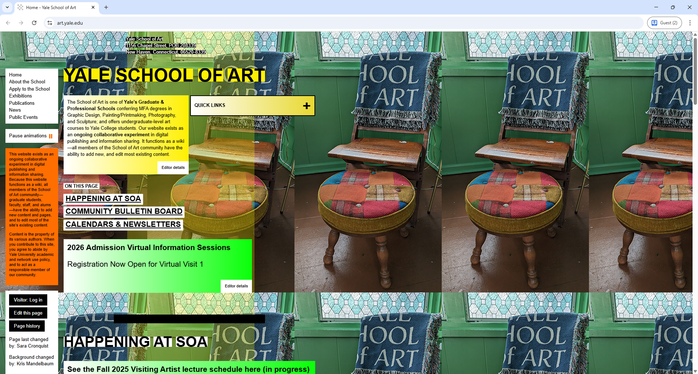

Software Configuration Management Demo
CI/CD with Automated Linting
The Ugliest UI I've Ever Seen

How I Would Improve It
- Establish a Clear Visual Hierarchy: Use size, color, and whitespace to guide the user's eye to the most important elements.
- Simplify Navigation: Consolidate all primary navigation links into a single, conventional header bar for predictability.
- Implement a Cohesive Color Palette: Replace the jarring mix of colors and flashing GIFs with a professional palette that builds trust.
- Improve Readability with Whitespace: Use a clean font and add generous whitespace to reduce cognitive load and make content scannable.
- Maximize the Web Space: All of the elements are in the left side. Maximize the whole web page and do not place all of the elements on a single side.